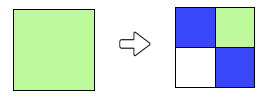
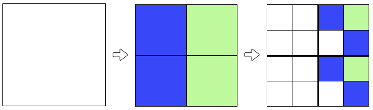
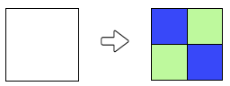
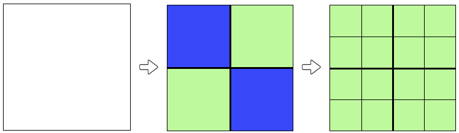
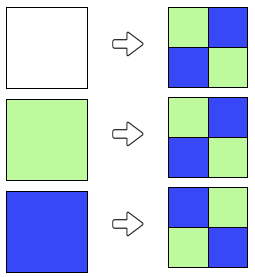
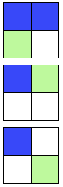

الحل
بعد التلوین الأول ، لون الصندوقین في النصف الأیمن هو اللون الأخضر. للحصول على الهدف بعد خطوة التلوین الثانیة ، یجب أن تتطابق قاعدة التلوین للمربع الأخضر مع النمط المكرر مرتین في النصف الأیمن من الهدف. لذلك دعونا نصلح قاعدة التلوین التالیة:

ثم نحصل على النصف الأول من النتیجة :

بنفس الطریقة ، یمكننا تحدید قاعدة التلوین للمربع الأزرق ، عن طریق نسخ نمط التكرار مرتین في النصف الأیسر من الهدف.
باختصار ، نحصل على النتیجة المرجوة من خلال القواعد التالیة:

في الخطوة الأولى ، نقوم بتلوین مربع أبیض في ٤ مربعات خضراء أو زرقاء. لاختیار لون الصنادیق ، یجب أن نأخذ في
الاعتبار الأسباب المرئیة في الهدف: الربع العلوي على الیسار مطابق للربع في أسفل الیمین ، وبالمثل ، یكون الربع العلوي
على الیمین مطابقا للربع في أسفل إلى الیسار. علیك أن تعكس هذه التماثلات )التناسق( في قاعدة التلوین للمربع الأبیض ، كمثال لذلك :

ثم نحصل على :

یبقى تحدید قواعد خطوة التلوین الثانیة. یجب استخدام قاعدة التلوین للمربعات الخضراء للحصول على النموذج)النمط( الظاهر في الربع العلوي الأیمن وأسفل الربع الأیسر للهدف.

ثم نحصل على :

یجب استخدام قاعدة التلوین للمربعات الزرقاء للحصول على النموذج)النمط( الظاهر في الربعین الآخرین من الهدف.
In summary, you can get the objective with the following rules :

لاحظ أنه یمكننا أیضا النجاح عن طریق قلب الألوان في الخطوة الأولى ؛ هنا الحل البدیل:

لاحظ الأنماط التي شكلتها جمیع المربعات المكونة من ٤ مربعات والتي تظهر في الهدف.

نرى أن هناك ٣ أنواع مختلفة من الأنماط: :

سیكون من الضروري حتما استخدام هذه الأسباب كقواعد التلوین. یبقى أن نرى التي سوف تتوافق مع كل لون.
للعثور على النمط الذي یتوافق مع قاعدة التلوین للأبیض ، قم بقص الهدف إلى ٤ مربعات )١٦ مربع لكل منهما(:

یمكننا أن نلاحظ بعد ذلك أن المربعین العلویین متطابقان ، في حین أن المربعین السفلیین لهما أنماط مختلفة.
نستنتج أن قاعدة تلوین الأبیض هي ، من بین الأنماط الثلاثة المحددة أعلاه ، مع وجود المربعین العلویین من نفس اللون.

بمجرد العثور على الخطوة الأولى ، یتعین علینا استخدام النموذجین الآخرین اللذین تم تحدیدهما كقواعد للتلوین باللون الأخضر والأزرق. هناك احتمالان فقط یمكن اختبارهما بسرعة كبیرة )و إلا یمكننا التفكیر ، لكن الأمر یتطلب المزید من الوقت هنا!(.
Iباختصار ، الحل هو :

إنها معلوماتیة !